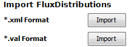

[B] Import FluxDistributions
Flux distributions are imported for the currently selected network.
Import flux distribution via the Import/Export Tab.

[C] Select CyFluxViz VisualStyle
Select an alternative VisualStyle via the VizMapper Tab. If no style is selected the
default CyFluxViz style is used.
[D] Adapt Mapping Function
The mapping between fluxes and network attributes can be adapted in the FluxMapping Tab.
[E] Change Sub-Network View
The NetworkView can be adapted based on the selected flux distribution to flux containing subnetworks
(SubNetwork Tab -> Flux subnet) or attribute subnetworks (Subnetwork Tab -> Attribute subnet).
[F] Export Images
Select Flux Distributions for export and export in PDF, SVG, EPS, JPG, PNG or BMP (Import/Export Tab).